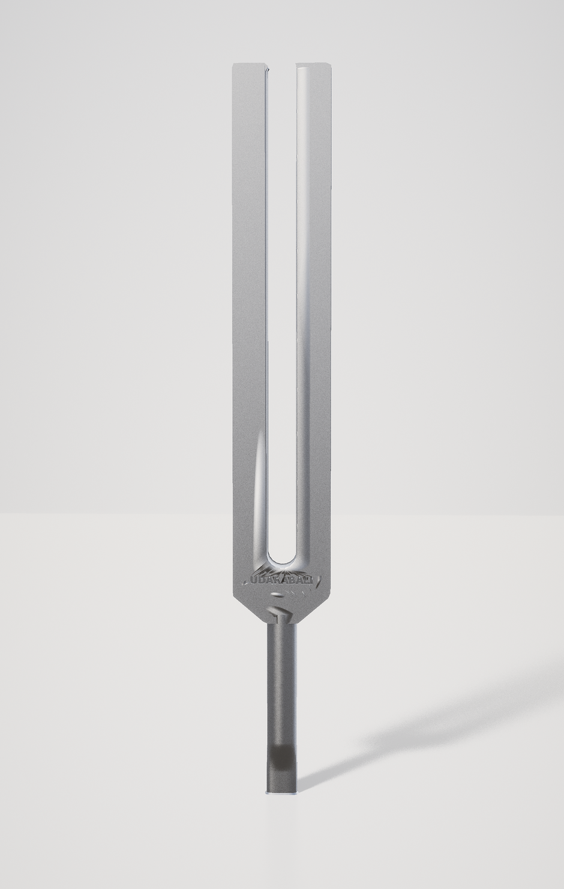
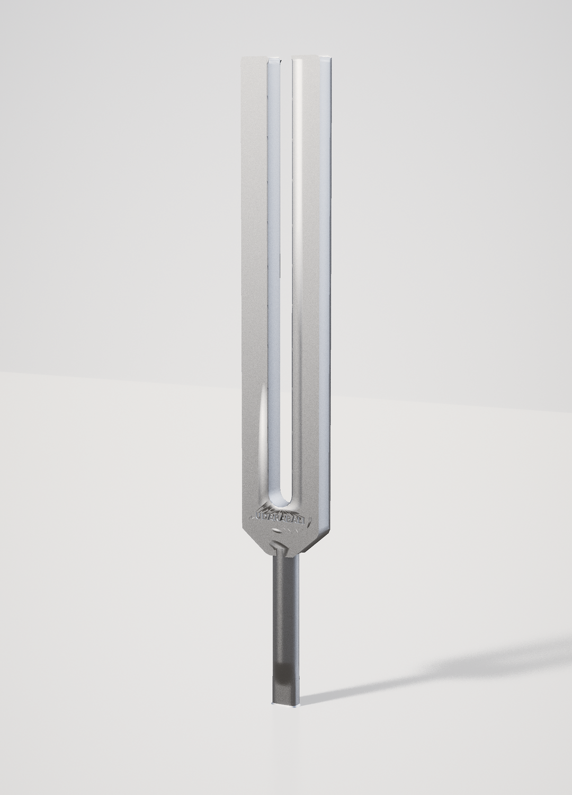
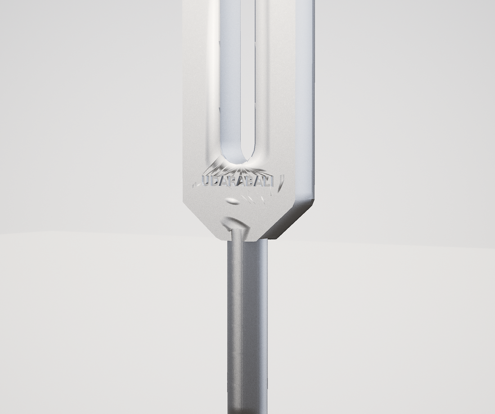
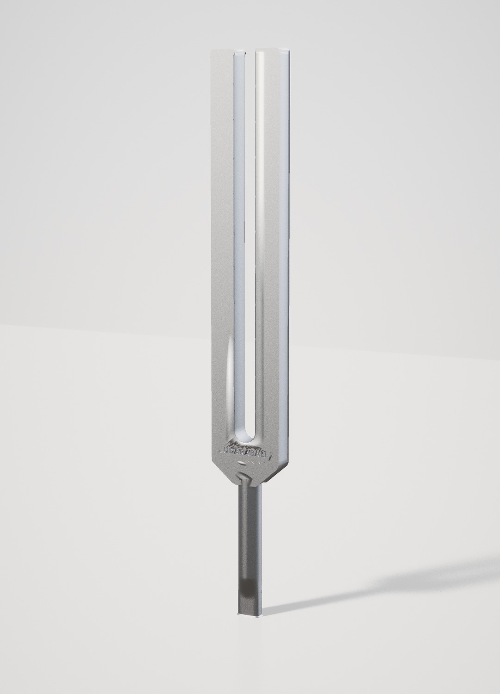
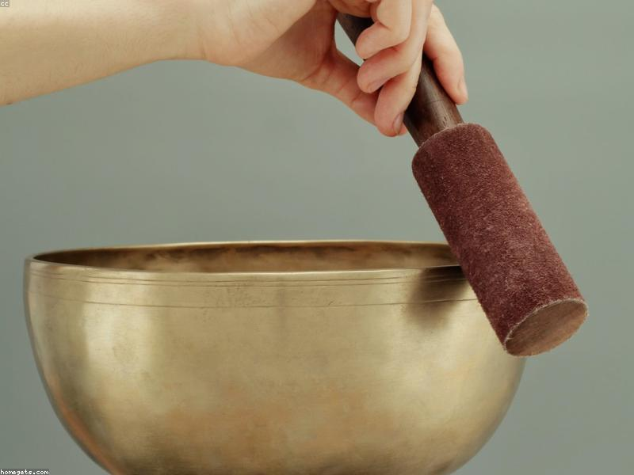

Ying & Yang
The Perfect Fifth — the most consonant interval in music. Played left and right, it synchronises the two hemispheres of the mind.
On requestEnquire →

Udara · Sound Therapy
Sound therapy, tuned to the body. Scroll to feel the fork turn.
“Each celestial body, in fact each and every atom, produces a particular sound on account of its movement. All these sounds and vibrations form a universal harmony.” — Pythagoras
Long before science could measure it, the ancients understood a simple truth: everything moves, and everything that moves, sings. We, too, are vibration — and when our inner rhythms fall out of tune, we feel it as tension and fatigue. Gently re-tuned, we return to harmony.
more than a shop — an extension of the Udara experience
Every piece is hand-selected for one quality above all: resonance. Instruments fine enough for a professional sound-healing practice, yet warm and welcoming enough to live with at home.

The Perfect Fifth — the most consonant interval in music. Played left and right, it synchronises the two hemispheres of the mind.

A meeting of two hearts — physical and spiritual. Harmonises emotion and releases deep blocks, bridging body and soul.

A 256 Hz carrier paired with Delta, Theta, Alpha and Beta forks. The beat between them entrains the mind into the chosen state in minutes.

The ancient six-tone scale once sung in sacred chants — 396 to 852 Hz, with extended 963, 285 & 147 Hz. Each tone a sonic prayer for deep healing.
Hans Cousto’s masterwork made audible — Sun, Moon, Earth and the planets, each orbit octaved up into a tone you can feel.
Each energy centre matched to a planetary frequency and colour. Played in sequence, a sonic massage that clears and realigns body and spirit.
Made from light aluminium and easy to handle — bright, clear tones, ideal for working in the aura and cleansing a space.
The giants of the family — felt more than heard. Adjustable weights and deep, palpable vibration travelling through the body by bone conduction. Hard case, mallet & key included.
Struck or circled with the mallet, a bowl blooms into a deep, enveloping tone that lingers and settles the whole room into stillness. Chosen for resonance — forgiving enough to play at home.

Lightweight, resonant bowls, hand-hammered from brass and fired to a shimmering rainbow sheen. Each carries a unique frequency — clear highs in the small bowls, deep lows in the large.
Add a little water and run the mallet around the rim: the vibration sets standing waves dancing on the surface — rippling, spraying, drawing the resonance into visible form.
A central hole channels the sound directly over joints, knuckles or the crown of the head — driving therapeutic frequencies deep into bone and tissue for focused, physical relief.
Seven bowls tuned to the seven notes of the scale (C to B), each aligned to an energy centre. Played in sequence, a sonic massage that clears and realigns the body.
Seven small, finely-crafted bowls in an ascending scale — clear, pristine tones that clear stagnant energy and soothe the mind. The perfect companion for daily meditation, and an ideal gift.
From a small family workshop north of Kathmandu — handmade, hand-hammered bronze “Purnima” bowls, crafted under the full moon. Exceptional sound, ethical making, a 6–8 month wait worth every day.
The deepest voice in the collection — felt long before it is heard. One soft strike releases a vast wave of overtones that washes through the body and dissolves held tension.
Hand-forged with a deep, earthy roar — the grounding voice of the collection. One soft strike releases a vast wave of overtones that washes through the body.
Blooms bright and wide, opening into a shimmering wash of overtones that fills a room and lifts the energy of a space.
The world-renowned planetary gongs, each tuned to a specific cosmic frequency. Sizes and planetary tunings configured to your practice.
Stroke the gong with the smaller balls for high, whale-song tones — the larger balls for deep, rumbling lows. One mallet, a whole range of voices.
The bright, airy voices of the collection — a single note to call the mind to presence, or a cascade of tones to clear the field.
A clear, sustained bell with an integrated incense holder — scent and sound together. As in the monasteries, it marks the start and end of meditation and calls the mind to the present.
An 8-tone chakra sequence tuning all seven centres plus the Soul Star. Played together they cascade into a harmonic field that clears the body and restores its natural resonance.
Tuned to the four elements. Play them by hand in meditation, or hang them to let the wind play — turning a passing breeze into a soft, spontaneous soundscape.
Earthy, rhythmic instruments that break up stagnation and reconnect you to the elemental forces of nature.
Hand-crafted in Bali with natural goatskin for a deep, resonant, authentic voice. An integrated pump lets you precisely adjust the skin tension to suit humidity, temperature and feel.
A handcrafted instrument that reproduces the deep, rolling resonance of a storm — ideal for breaking up energetic stagnation and facilitating powerful emotional release.
Handcrafted from natural, resonant seeds and nuts. Their continuous rhythm shakes loose energetic blockages, anchors intention and guides the practitioner into a meditative state.
Soothing string instruments tuned to create a resonant field of sound. Their gentle, cascading tones soothe the nervous system almost instantly — angelic vibrations that clear stress and restore inner peace.
Compact and intimate — let your fingers fall gently across the strings for a cascading, angelic tone. Perfect for personal practice.
A fuller, enveloping resonant field, available in standard, monochord and pentatonic tunings — configured to your practice.
No training, no theory — just a few quiet minutes. Strike, listen, and let the vibration do the work.
Tap the fork on a puck or your knee. Bring it close to each ear to quiet the mind, or rest the stem on the body to send vibration into tissue and bone.
Strike the rim softly for a single bloom of sound, or circle it slowly with the mallet to build a continuous, enveloping tone.
Warm the gong with a few light touches, then strike the centre. Small mallet balls give bright highs, larger ones deep, rolling lows.
Ring a bell to open and close your practice. Brush chimes by hand for a cascade — or hang the bamboo set and let the wind play it.
Find a slow, steady pulse. The rhythm anchors your intention and shakes loose stagnant energy, easing you into a meditative state.
Let your fingers fall gently across the strings. The cascading, angelic tones soothe the nervous system almost instantly.
The one that resonates is the one that is yours. Our boutique team will help you find it — and ship it anywhere in the world.
Enquire with the boutiqueCanggu · Berawa — Bali, Indonesia